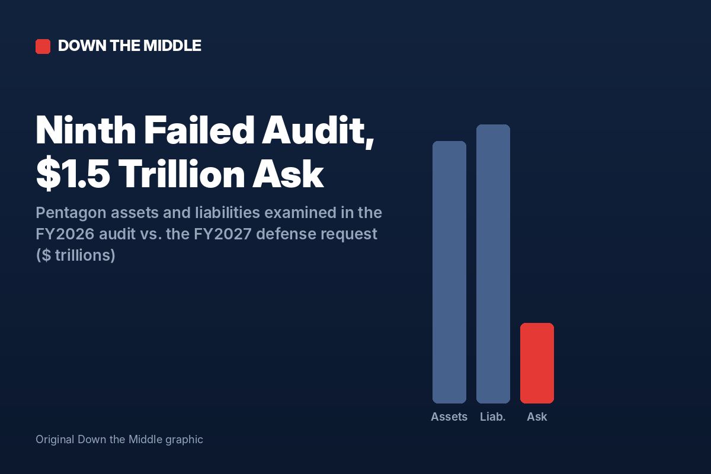
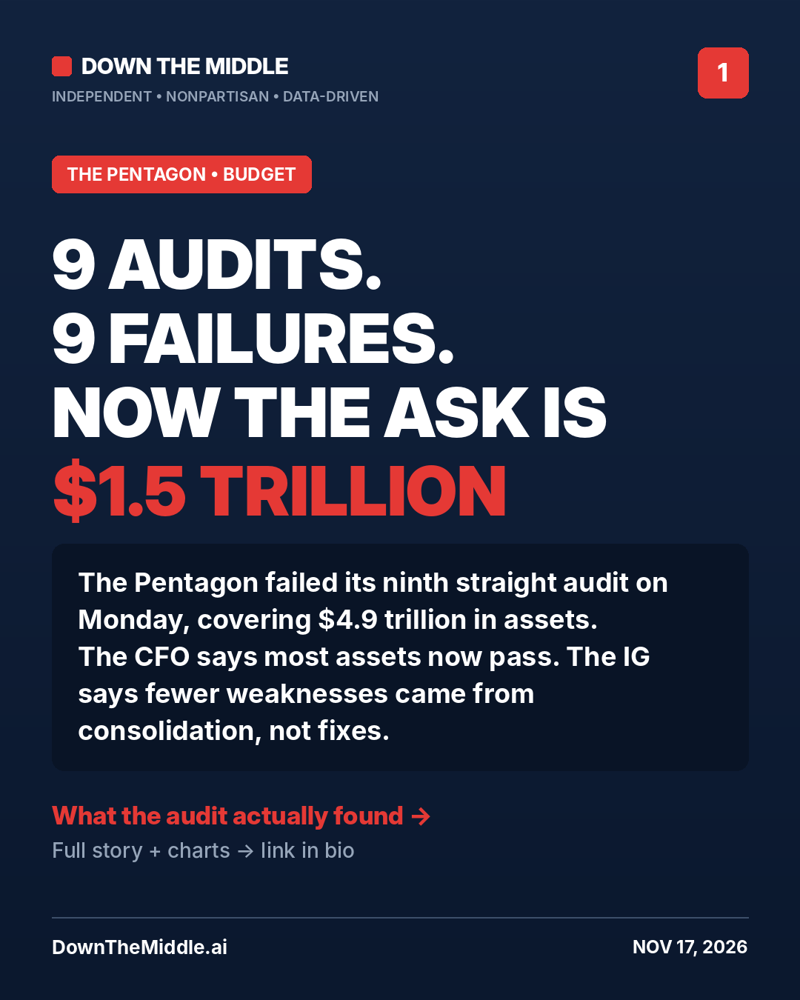
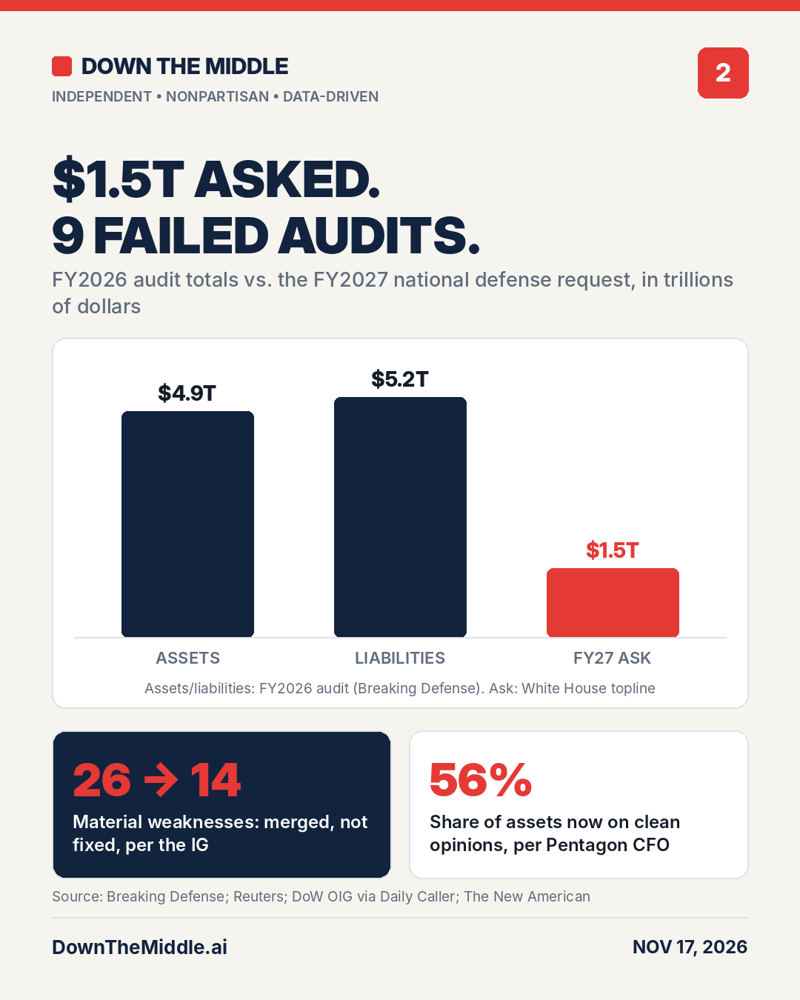

The Pentagon Failed Its Ninth Audit. Here’s What the Numbers Show Before the $1.5 Trillion Budget Fight.
November 17, 2026 · Independent, nonpartisan analysis

On Monday the Pentagon, which the administration now calls the Department of War, failed its ninth straight financial audit. It has failed every year since the first department-wide audit in 2018. [1] [2] The department’s inspector general issued a disclaimer of opinion, meaning management could not give auditors enough evidence to support the numbers. [3] [7] The audit covered about $4.9 trillion in assets and $5.2 trillion in liabilities. [2]
The department’s finance chief says this is the best result yet. Critics on the left and right point out that it arrives as the White House is asking for $1.5 trillion for national defense next year. [1] [3] [4] Both are true. Here’s what the numbers show.
By the numbers
The documented figures behind the ninth failed audit.
What the auditors found
The department doesn’t get a single grade. It has 25 separate reporting entities, including the military services, working-capital funds and agencies, and each one is audited on its own. [1] Reuters, citing Chief Financial Officer Jules Hurst, reports that 14 of the 25 passed this year, up from 11. Together they hold 56% of the department’s assets and 86% of its liabilities. [1] Breaking Defense counts 12 clean opinions: last year’s 11 plus the Medicare-Eligible Retiree Health Care Fund. It reports that four more (the Navy Working Capital Fund, DISA’s general fund, the DIA and the NGA) are expected to pass by February 2027. [2] The difference between the two counts may come from timing, but neither outlet explains it, so we show both.
The Army, Navy and Air Force general funds, which hold most of the military’s equipment and spending, are not yet among the clean opinions. Hurst’s office is aiming for clean opinions on the services’ working-capital funds and several smaller agencies in FY2027, and the Navy general fund the same year. [2] Hurst summed up the challenge this way: “Passing the audit is ultimately a time problem.” [1]
Clean opinions are rising, slowly
Pentagon reporting entities that received a clean (unmodified) audit opinion, out of 25. Hover or tap a bar for the source.
The dashed segment on FY2026 shows the gap between Breaking Defense’s count (12) and Reuters’s (14, citing CFO Hurst). *February 2027 is a projection: Breaking Defense’s 12 plus four entities the department expects to pass. FY2022 is from Taxpayers for Common Sense’s 2023 summary of the most recent audit at the time, and it may count entities differently. [1] [2] [10]
Insight 1
Fewer weaknesses on paper, not fewer problems
A “material weakness” is the most serious kind of problem an auditor can flag. Last year auditors found 26 of them, plus two significant deficiencies. [5] [6] This year the inspector general reports 14. That looks like nearly half fixed. The IG’s deputy for audit, Brett Mansfield, says otherwise: “that reduction stems from consolidation, not resolution.” [3] In other words, the 26 problems were regrouped into 14 categories. [4] Auditors also found five instances of noncompliance with legal or contractual requirements. [4] Any headline saying weaknesses fell by half is misleading for that reason.
26 to 14, by regrouping
Material weaknesses identified in the department-wide audit. Hover or tap a bar for the source.
The FY2026 figure reflects 26 earlier weaknesses consolidated into 14, according to the inspector general. It does not mean 12 were fixed. [3] [4] [6]
Insight 2
The books got bigger while the audit failed again
Assets in the audit rose from $4.65 trillion last year to about $4.9 trillion. Liabilities rose from $4.7 trillion to $5.2 trillion. [2] [5] A failed audit doesn’t mean that money is missing. These are reported balances that auditors couldn’t fully verify, and The New American, which is critical of the Pentagon, makes the same point. [4] Some concrete gaps have been documented, though. Last year auditors found the department hadn’t reported F-35 parts in its global spares pool, and they couldn’t quantify how much that misstated assets. [6] Hurst described the core problem as a gap between what’s in the field and what’s on the books. [4]
What the auditors were asked to verify
Assets and liabilities covered by the department-wide audit, in trillions of dollars.
FY2025 figures are from Sen. Sanders’s July 2026 release citing that year’s audit. FY2026 figures are from Breaking Defense; The New American reports “more than $4.8 trillion” in assets. These are balances auditors examined, not amounts verified. [2] [4] [5]
Insight 3
The 2028 deadline is less than a year away
Congress set a deadline in the FY2024 defense bill: a clean, department-wide opinion by FY2028. [6] That fiscal year starts in October 2027. [1] Defense Secretary Pete Hegseth posted Monday that the department will pass a full, clean audit by 2028. [3] The plan is to merge the 25 separate statements into eight, bring in outside auditors, and use AI tools from Palantir and xAI for reconciliations. [1] [2] The department still runs 149 financial-management systems. [1] Hurst has said they can’t all be fixed and modernized in two years. [4] If the deadline is met, the clean audit would be on the FY2028 books, reported in late 2028, two budget cycles after the $1.5 trillion request.
The budget request the audit is being weighed against
National defense funding, in trillions of dollars. Hover or tap a bar for the source.
The request and its split ($1.15T discretionary, $350B through reconciliation) come from the White House FY2027 topline, as reported by The New American. *The FY2026 baseline is Down the Middle’s calculation: $1.5T minus the reported $445B increase. The New American puts the increase at about 42%. The Daily Caller, citing GAO, says 44%. Sen. Sanders’s office describes the request as about $1.15T, which matches only the discretionary part. [3] [4] [5] [8]
How we got here
Solid dots are official actions and documented events. Dashed dots are projections or targets.
- FY2018Pentagon
First department-wide financial audit. It fails. [1] [4] - Dec 2023Congress
The FY2024 defense authorization sets a clean-audit deadline of FY2028. [6] - Dec 19, 2025Pentagon
Eighth straight failure: 26 material weaknesses, 11 clean entity opinions. [1] [6] - Feb 2026House
Rep. Mark Pocan drafts an “Audit the Pentagon Act” that would cut funds to entities without a clean opinion. [9] - Jul 30, 2026Senate
Sens. Bernie Sanders (I-Vt.) and Chuck Grassley (R-Iowa) reintroduce their bill. It would send 2% of a failing component’s budget back to the Treasury. [5] - Nov 16, 2026Pentagon / IG
Ninth straight failure and a disclaimer of opinion. The CFO says a majority of assets are now on clean opinions. [1] [2] [3] - Feb 2027Pentagon
Four more entities are expected to get clean opinions. Projected [2] - FY2028Congress’s deadline
Target for a clean department-wide opinion. Target [1] [6]
How each side makes its case
Same audit, different lessons
This fight doesn’t split neatly by party. We describe each position in our own words and check it against the data.
The Pentagon & administration
- The department is making real progress: more clean opinions than ever, and for the first time a majority of assets. [1]
- Decades-old systems are the main obstacle, and a new audit strategy plus AI tools will get the department to a clean opinion by 2028. [1] [2]
- Hegseth says the department is “more than halfway there.” [4]
Critics, left and right
- Sanders calls it the only major agency “that has never passed an independent audit.” [5]
- Sanders and Grassley, joined by progressives and Sens. Mike Lee and Rand Paul, want to dock budgets of failing components by 2%. [5]
- Right-leaning outlets ask why a department that can’t pass an audit should get a record budget. [3] [4]
Down the middle
Both things are true. The Pentagon has made measurable progress: more of its parts pass each year, and the CFO says most of its assets now sit in entities with clean opinions. [1] But the department as a whole has still never passed, and the biggest drop in this year’s report, the cut in material weaknesses, came from changing how problems are counted. [3] Calling the books “$4.9 trillion unaccounted for” overstates the case, and so does calling this year’s result a turnaround. The fact that critics include both Bernie Sanders and Rand Paul suggests this is about how the department is managed, not party lines. [5] As Congress weighs a $1.5 trillion request, it has to decide whether to tie some of that money to audit results or rely on the department’s 2028 promise.
What to watch
February 2027: whether the four projected clean opinions (Navy Working Capital Fund, DISA, DIA and NGA) come through. [2] The services’ general funds: the Army, Navy and Air Force are the real test of the 2028 promise. [2] The FY2027 budget fight: whether Congress approves the $1.5 trillion topline and the $350 billion reconciliation piece. [4] The Sanders–Grassley bill: whether the audit-penalty idea gets attached to defense legislation. [5] The full IG report: what the 14 consolidated weaknesses actually cover. [7]
Share it


Sources and primary documents
- [1] Reuters via Air Force Times — Pentagon fails ninth straight audit despite progress in organizing finances (Nov 17, 2026)
- [2] Breaking Defense — Pentagon fails 9th audit, asserts path towards clean books in 2028 (Nov 16, 2026)
- [3] Daily Caller — Pentagon can’t pass an audit, wants $1.5 trillion from taxpayers (Nov 17, 2026)
- [4] The New American — Pentagon fails ninth audit as Trump seeks $1.5 trillion military budget (Nov 17, 2026)
- [5] Sen. Bernie Sanders — Sanders, Grassley reintroduce bipartisan bill to audit the Pentagon (Jul 30, 2026)
- [6] Breaking Defense — Pentagon fails another audit, restates 2028 goal to finally pass (Dec 19, 2025)
- [7] DoW Office of Inspector General — Independent auditor’s reports on the FY2026 and FY2025 financial statements (Nov 2026), as quoted by the Daily Caller and The New American
- [8] GAO — GAO-26-109115, as cited by the Daily Caller for the 44% increase figure
- [9] Rep. Mark Pocan — Audit the Pentagon Act of 2026, draft bill text (Feb 2026)
- [10] Taxpayers for Common Sense — Auditing the Pentagon (June 2023)
Clean-opinion counts for FY2026 differ between Reuters (14 of 25, citing CFO Hurst) and Breaking Defense (12). We show both. The February 2027 figure is the department’s projection. The FY2026 national-defense baseline is Down the Middle’s calculation from the White House figures cited. We could not open the inspector general’s release or the GAO report directly, so figures from them are attributed to the outlets that quoted them. Reflects reporting available November 17, 2026.